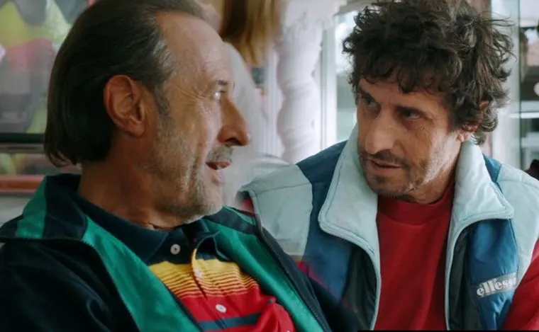

Guillermo Francella acompañó una función especial a beneficio del Hospital de Niños

El Miracle Theatre recibió una función exclusiva de la película argentina dirigida por Ariel Winograd, con la presencia de Guillermo Francella y una sala colmada.
La gala organizada por MIArgentina reunió a autoridades, referentes de la comunidad y figuras del entretenimiento. Entre los invitados estuvo el cantante José Luis “El Puma” Rodríguez.
Antes de la proyección, los organizadores compartieron el propósito solidario de la noche. Después, Francella habló con el público sobre la película y recibió una ovación de pie.
La presentación combinó la difusión de una producción argentina de gran convocatoria con el apoyo a la Cooperadora del Hospital de Niños Dr. Ricardo Gutiérrez. Al cierre, el actor saludó y se fotografió con los asistentes.
Información adaptada de MDZ: “Así fue el paso de Francella por Miami para presentar El Robo del Siglo”, publicación del 29 de enero de 2020.